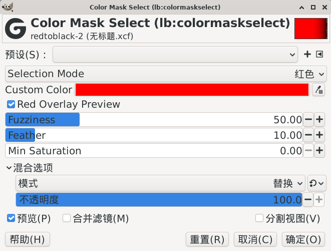

本文件是该滤镜的原始说明文档（构建命令按旧目录结构书写，已过时）。 统一构建方式请见工程根目录
README.md与build.sh。
GEGL_GIMP_PLUGIN_color-mask-select

English version（同一份说明的英文版）
1. Compile & Install Commands
Native Linux (System installed GIMP)
sh build_linux.sh
cp build/gegl-*.so ~/.local/share/gegl-0.4/plug-insFlatpak Linux (Flatpak GIMP)
sh build_linux.sh
cp build/gegl-*.so ~/.var/app/org.gimp.GIMP/data/gegl-0.4/plug-ins/2. How to Open the Plugin (2 Methods)
After installation, restart GIMP to activate the plugin.
Method 1: Menu Bar (Recommended)
Menu path: Colors → SuperMrWang → Mask → Mask by Color
Method 2: GEGL Operation
- Go to
Filters → Generic → GEGL Operations - In the search box, enter:
lb:color-mask-select - Select it and click
OKto apply
中文
1. 编译与安装命令
Linux 原生版（系统包安装的GIMP）
sh build_linux.sh
cp build/gegl-*.so ~/.local/share/gegl-0.4/plug-insLinux Flatpak 容器版（应用商店Flatpak GIMP）
sh build_linux.sh
cp build/gegl-*.so ~/.var/app/org.gimp.GIMP/data/gegl-0.4/plug-ins/2. 插件打开方式（两种方法）
安装完成后重启 GIMP，插件即可使用。
方法一：菜单打开（推荐）
菜单路径：颜色 → SuperMrWang → Mask → Mask by Color
方法二：GEGL 操作打开
- 顶部菜单点击：
滤镜 → 通用 → GEGL 操作 - 在弹出窗口的搜索框输入：
lb:color-mask-select - 选中后点击「确定」即可使用插件
行为变更记录（2026-11-12 重写）
旧实现有一个致命 bug：默认 Min Saturation = 0 时饱和度门限退化成 smooth_step(s, 0, 0)，对灰阶像素（s = 0）做 0/0 得 NaN，alpha 落盘即 0—— 所有灰阶在任何模式下都被判成透明，白/黑/中间调三个模式整体报废；fuzziness = 0 时同样 NaN。判定公式（通道差值 + 负起点过渡带）也让「容差」的含义随模式漂移。
重写后的统一模型：每个模式把像素映射成「不匹配度」 d ∈ [0,1]（0 = 精确匹配）， alpha = 1 - smoothstep(d, w*(1-feather), w)，其中 w = fuzziness/200 （fz=200 时窗宽到最大不匹配度：互补色相、纯黑↔纯白）：
| 模式 | d 的定义 |
|---|---|
| 红/黄/绿/青/蓝/洋红 | 色环距离（互补色 = 1），乘饱和度门限——灰阶无色相不参与 |
| 高光 | d = 1 − 亮度 |
| 阴影 | d = 亮度 |
| 中间调 | d = 2·|亮度 − 0.5| |
| 自定颜色 | 感知 RGB 距离 ÷ √3 |
- feather（0–100）：容差窗内缘的过渡带宽度，feather=10 → 窗口内侧 10% 平滑衰减
- Min Saturation：色系预设的饱和度下限，0 = 固定小底限
- Invert（新增）：反相蒙版，同 PS 的「反相」勾选框
- Red Overlay Preview 默认改为关：开着点确定会把红色混合烤进图层，预览完记得关
16 色块回归：红/黄/白/黑/中间调/自定/反相/fz0/fz200 九个用例全部符合上表语义。
高光 / 阴影 / 中间调改成 PS 实测模型（2026-11-12 二次修订）
上面那版统一模型仍有问题：「容差」一个滑杆同时决定了阈值和柔边，想收紧范围 必然连带把过渡带变硬，PS 里这是两个独立滑杆。用户说「特别不好用」，根子在这。
先解决「PS 色彩范围没法脚本化」的误会
之前两次尝试都以 Photoshop.exe 当场退出告终，结论写成「Adobe 色彩范围不可脚本化」。 真正的坑有两个：
- ExtendScript 的
File对象没有flush()。say()里写了f.writeln(s); f.flush();，writeln已经把行落盘、flush抛异常， 于是日志永远只停在第 1 行，看起来像「PS 在 executeAction 处崩溃」。 改成每行open("a") / writeln / close后，日志一路写到底。 executeAction('colorRange', desc, DialogModes.NO)本来就能跑， 不需要弹窗、不需要点确定。DialogModes.ALL反而会把脚本卡在模态框上。
另外 PS 2026 在本机被安全策略拦住（reg.exe 黑名单），改用 PS 2025 (26.10.0) 做基准；两版「色彩范围」行为一致。驱动脚本在 clrr-cal/。
参数键名：别猜，从二进制里挖
shadowsUpperLimit 这类键能在 Photoshop.exe 里直接搜到，周围的字符串就是 整张 schema。挖出来的关键几条（网上流传的教程基本都没提这几个）：
fuzziness / minimum / maximum 取样颜色用
highlightsFuzziness
midtonesFuzziness
shadowsFuzziness ← 色调模式各自的容差，不是共用的 fuzziness
highlightsLowerLimit
midtonesLowerLimit / midtonesUpperLimit
shadowsUpperLimit
invert / colors(highlights|midtones|shadows|outOfGamut|skinTone)用错键名不会报错，只是静默无效——一开始拿 fuzziness 喂阴影模式， 容差 0 和 200 输出逐位相同，就是这个原因。
实测出来的模型
- 亮度 = Rec.601 伽马域加权（0.299/0.587/0.114），不是 Lab L*： 阈值 100 时 50% 交界落在 luma 100.9，阈值 150 时落在 149.0。
- 阈值是硬边界，容差把过渡带按「到极端还剩多少」铺开：
| 模式 | 过渡带 |
|---|---|
| 阴影 | band = fz·(255 − lim)，从 lim 一路铺到纯白 |
| 高光 | band = fz·lim，从 lim 一路铺到纯黑 |
| 中间调 | 下边 fz·low（铺到纯黑）、上边 fz·(255 − high)（铺到纯白），取交 |
fz 是 PS 的容差 0–100（本算子 fuzziness 0–200，内部 ÷2），所以 容差拉满 = 过渡带正好碰到纯黑/纯白，与 PS 手感一致。
- 曲线不是纯 smoothstep：实测 50% 点落在带宽的 0.555 处（9 组参数 53%–58%），纯 smoothstep 是 0.5，中段会偏亮 10 码。改成
alpha = 1 − smoothstep(t^1.2)，幂次 1.2 是拿 24 组参考曲线扫出来的最优。
精度（对 PS 2025 实测，0–255 码）
- 全表 768 个采样点：平均 2.12 码，最大 32.3 码（出现在 alpha < 20 的尾巴上， 肉眼就是「几乎不选」和「选了一点」的差别）。
- 阈值/容差取整档（fz = 0）时是逐位一致的硬边界。
- 逐像素复核
clrr-cal/verify_op.py：35 组参数在 512 px 斜坡上跑全图对比， 平均 1.46 码。
tools/check_color_mask_select.py 把这份参考表固化成了回归用例 （../clrr-cal/ps_color_range_ref.json，不在仓库里就自动跳过）。
新增参数
| 参数 | 默认 | 作用 |
|---|---|---|
shadows-limit | 64 | 阴影上限（低于它全选） |
highlights-limit | 192 | 高光下限（高于它全选） |
midtone-low / midtone-high | 64 / 192 | 中间调上下限 |
默认值也是实测出来的：PS 不传任何限制时，阴影 50% 交界在 85.8、高光在 167.7， 反解出来正是 limit=64/192 + 容差 20。
羽化在这三个模式里不参与——PS 的柔边完全由容差决定，硬塞一个羽化会破坏对拍。 色系预设与自定颜色仍是原来的容差窗模型（那部分没动）。
只要这一个
Windows 模块 color-mask-select.dll，放进 %LOCALAPPDATA%\gegl-0.4\plug-ins 后重启 GIMP。
整包在 下载页。